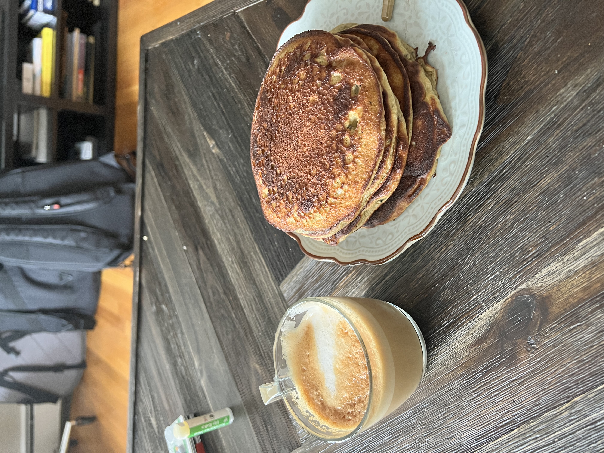

Banana Protein Pancakes
A morning triumph. No whey around it.

Putting protein in everthing has gained a lot of traction in recent times. As a result, many health recipes taste bad. These high protein pancakes, however, do not succcumb. Behold the very pinnacle of pre-workout breakfast!
- Ingredient Measurements (Mix wet and dry separate)
1. Dry Ingredients
Mix 1 Cup of Flour, 1/2 tsp Baking Soda, 4tbsp sugar, 1 pinch of salt, and 25 grams of Whey Isolate or Concentrate into a bowl. Use Vanilla Whey is you can!
- 2. Wet Ingredients
Mix 1 cup of milk (I use whole milk, but you are in charge right now),1 tbsp vanilla extract, 1-2 bananas, and an optional egg or two if addtional protein is of interest.
- 3. Mixing and Cooking
With a pan heating to medium, we will now mix our dry and wet ingredients. Be careful not to overbeat the pancakes as the professionals suggest not to do this. Add butter or olive oil (butter is magnificent here), and pour 1/2 cup of pancake mix to cook on the pan. After you see bubbles appear Ƒ-2mins), flip and cook another 1-2mins. You're done now! Now just finish the batter.
Next Recipe Homepage